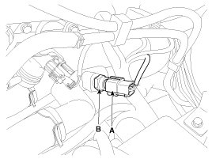

Coolant Temperature Sensor/Switch (For Computer): Service and Repair
Inspection
1. Turn the ignition switch OFF.
2. Disconnect the ECTS connector.
3. Remove the ECTS.
4. After immersing the thermistor of the sensor into engine coolant, measure resistance between the ECTS terminals 1 and 3.
5. Check that the resistance is within the specification.
Specification:Refer to "Specification"
Removal
1. Turn the ignition switch OFF and disconnect the battery negative (-) cable.
2. Disconnect the engine coolant temperature sensor connector (A).
3. Remove the sensor (B).

CAUTION:
Note that engine coolant may be flowed out from the water temperature control assembly when removing the sensor.
4. Supplement the engine coolant .
Installation
CAUTION:
- Install the component with the specified torques.
- Note that internal damage may occur when the component is dropped.
CAUTION:
- Apply the engine coolant to the O-ring.
CAUTION:
- Insert the sensor in the installation hole and be careful not to damage.
1. Installation is reverse of removal.
Engine coolant temperature sensor installation:
29.4 - 39.2 N.m (3.0 - 4.0 kgf.m, 21.7 - 28.9 lb-ft)